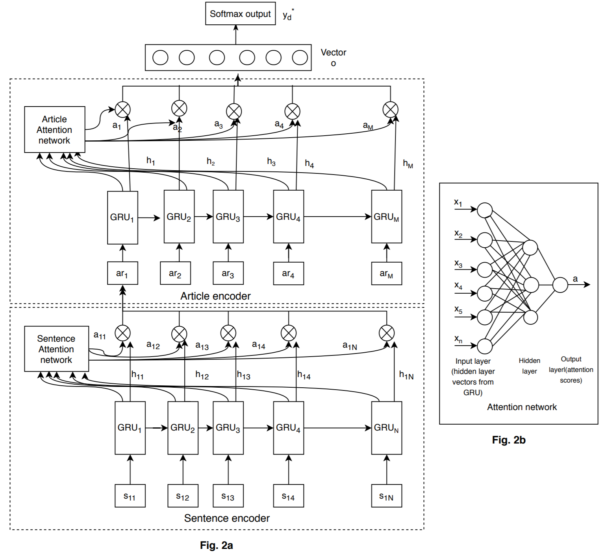

|
Angeela Acharya I am a Ph.D. candidate at George Mason University, anticipating to graduate in May 2024. I am being advised by Dr. Sanmay Das. I am deeply passionate about the field of machine learning, with a primary focus on leveraging this technology for the betterment of society, often referred to as 'Machine Learning for Social Good'. My expertise lies in working with sequential data, such as texts and time series data, where I find both challenge and inspiration. I possess over five years of comprehensive experience within the domains of machine learning and data mining and have published multiple papers in reputed venues. |
{kind=link}
Research HighlightsA substantial portion of my research revolves around the analysis of sequential data, encompassing both textual information and time series data. My most recent work involves investigating the benefits and challenges of using large language models for EHR-based risk prediction tasks. Overall, my research spans works on natural language processing, time series data mining, synthetic data generation, and spatio-temporal mining. Below are the highlights of my works: |
|
|
Clinical Risk Prediction Using Language Models: Benefits and Considerations
Angeela Acharya, Sulabh Shrestha, Anyi Chen, Joseph Conte, Sanja Avramovic, Siddhartha Sikdar, Antonios Anastasopoulos, Sanmay Das Under Review at JAMIA Language models (LMs) encompass extensive embedded knowledge, making them valuable for the analysis of EHRs in the context of clinical risk prediction. Models based on LMs exhibitted superior performance across diverse datasets. Nevertheless, it is important to exercise caution in their application, as ongoing safety concerns related to LMs persist and require continuous consideration. |

|
GenSyn: A Multistage Framework for Generating Synthetic Microdata using Macrodata Sources
Angeela Acharya, Sanmay Das, Siddhartha Sikdar, Huzefa Rangwala IEEE Bigdata 2022 In this study, we examine synthetic data generation as a tool to extrapolate difficult-to-obtain high-resolution data by combining information from multiple easier-to-obtain lower-resolution data sources. In particular, we introduce a framework that uses a combination of univariate and multivariate frequency tables from a given target geographical location in combination with frequency tables from other auxiliary locations to generate synthetic microdata for individuals in the target location. |
|
Exploring County-level Spatio-temporal Patterns in Opioid Overdose Related Emergency Department Visits
Angeela Acharya, Alyssa Izquierdo, Stefanie Gonçalves, Rebecca Bates, Faye Taxman, Martin Slawski, Huzefa Rangwala, Siddhartha Sikdar PLOS One 2022 Opioid overdoses within the United States continue to rise and have been negatively impacting the social and economic status of the country. In this study, we utilized data on emergency department opioid overdose (EDOOD) visits to explore the county-level spatio-temporal distribution of opioid overdose rates and their association with aggregate socio-ecological factors. |

|
Homicidal Event Forecasting and Interpretable Analysis Using Hierarchical Attention Model
Angeela Acharya, Jitin Krishnan, Desmond Arias, Huzefa Rangwala SBP-BRiMS 2020 We propose a hierarchical attention-based mechanism that utilizes the temporal nature of event incidents obtained from news articles to extract information indicative of future events and make predictions accordingly. |
Teaching |
|
Developing coursework & designing exercises -- CS108 (Fall '22), CS109 (Spring '23)
Teaching assistant and lab instructor -- CS112 (Fall '18, '19) |
Achievements |
|
Doctoral research scholarship, Office of the Provost, GMU (2023-24)
Outstanding academic achievement award, MS in computer science (2022) Summmer research initiation award (2019) |
Miscellanea |
 |
Served as a reviewer for: AIES '23, ISMB '20, SDM '19, ICDM '19.
Student Volunteer at IEEE Big Data 2022. CRA-WP Grad Cohort for Women Workshop Participant, 2021. NRT Trainee, 2020. |